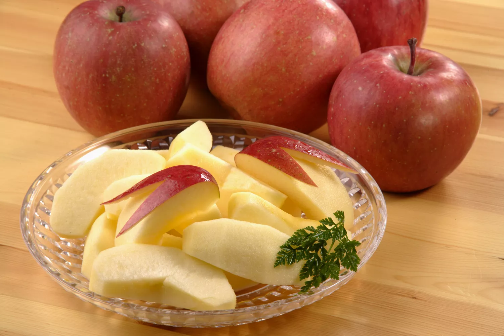

Japanese Bunny Apple Snacks (Usagi Ringo)

How to make Usagi Ringo
Usagi ringo are a common way of preparing apples for children's lunches in Japan.
Usagi means rabbit and ringo means apple, so directly translated it would be Bunny apple.
Usagi ringo are easy to make as you don't need a lot of things to make them.
Ingredients and Tools
- At least one apple ( I prefer honeycrisp)
- A very sharp knife (be extra careful)
- Optional: an apple corer
Steps
- Wash your apple(s)
- Using either the apple corer or your knife cut the apple into 6 or 8 slices
- Take one of the slices, and starting from the middle, cut a reverse V into the skin making sure that it goes through the skin
- Starting from the edge where the V ends use your knife to cut until you reach the point where the lines of the V meet
Be sure not to cut too close to the skin or the ears will fall off!
- As long as your cuts in step 3 were deep enough you should be able to remove the V and be left with what looks like a bunny made from your apple.
- Repeat steps 3-5 until all apple slices have turned into rabbits
Return to Recipe List